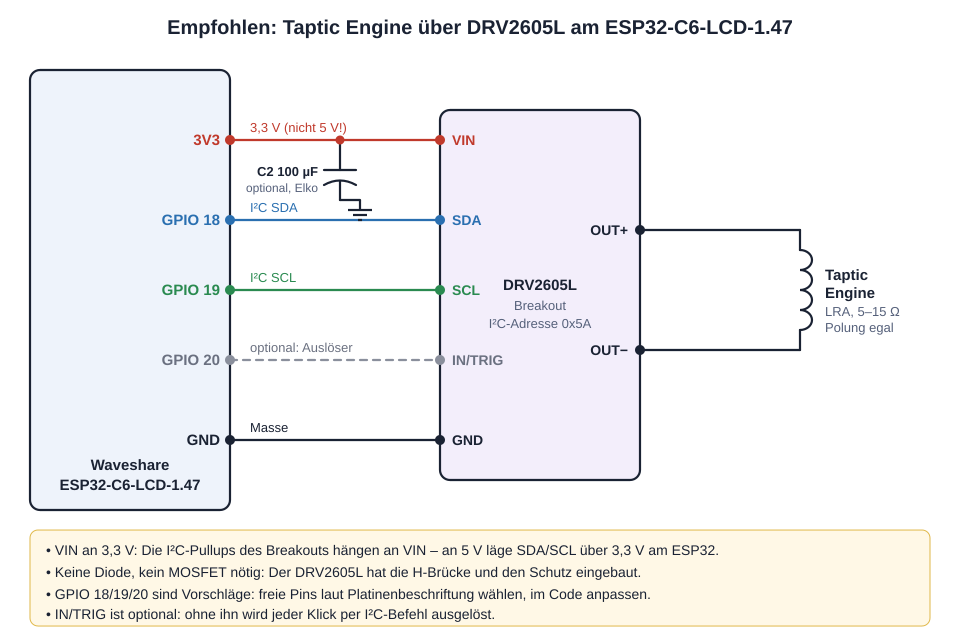
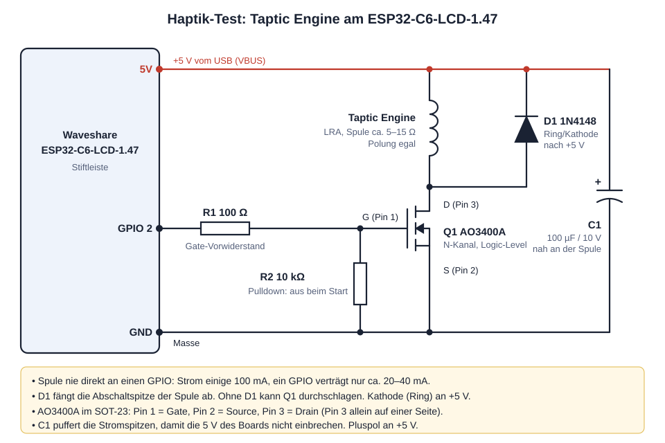

Empfohlene Variante: DRV2605L · Seite 1 von 4 · Branch feat/haptik-test

Die Taptic Engine eines iPhone 7/8 ist ein LRA (Linear Resonant Actuator): eine Spule, die eine gefederte Masse hin- und herbewegt. Sie vibriert nur dann kräftig, wenn sie im Takt ihrer Resonanzfrequenz (grob 150–250 Hz) angesteuert wird. Der DRV2605L von Texas Instruments ist ein Treiber-IC genau dafür: Er misst die Resonanz selbst, folgt ihr im Betrieb und bremst die Masse nach jedem Klick aktiv ab. Der ESP32 schickt nur noch einen kurzen I²C-Befehl („Effekt 1 abspielen“).
| DRV2605L (empfohlen, Seite 1–2) | MOSFET (einfach, Seite 3–4) | |
|---|---|---|
| Ansteuerung | H-Brücke: drückt und zieht | einseitig: zieht nur |
| Resonanz | Auto-Kalibrierung, folgt ihr laufend | von Hand suchen und fest eintragen |
| Klickgefühl | knackig dank Overdrive und aktivem Bremsen | weicher, Masse schwingt nach |
| Effekte | 123 fertige Effekte im Chip | selbst programmieren |
| Anschluss | 4 Drähte: 3V3, GND, SDA, SCL (+ optional IN/TRIG) | 3 Drähte: 5V, GND, GPIO 2 |
| Kosten | Breakout ca. 5–8 € | Bauteile unter 0,50 € |
| Modellaufzug (P4) | einfach an den vorhandenen I²C-Bus (GPIO 7/8), Adresse 0x5A frei | braucht einen freien GPIO |
Seite 2 von 4
| Pos. | Menge | Bauteil | Wert / Typ | Bauform | Aufgabe / Hinweis |
|---|---|---|---|---|---|
| U1 | 1 | Haptik-Treiber-Breakout | DRV2605L (z. B. Adafruit 2305 oder günstiges Modul) | Platine | Treibt die Spule über eine eingebaute H-Brücke, Auto-Kalibrierung, Effektbibliothek. I²C-Adresse 0x5A. |
| C2 | 1 | Elko (optional) | 100 µF, ≥ 6,3 V | radial | Puffert Stromspitzen an VIN. Plus an 3V3, Streifen (−) an GND. Nur nötig, wenn das Display beim Klicken flackert. |
| M1 | 1 | Taptic Engine | iPhone 7 / 7 Plus / 8 (Ersatzteil) | Flexkabel | Spule ca. 5–15 Ω, an OUT+ und OUT−, Polung egal. |
| – | – | Zubehör | Dupont-Kabel oder Litze, Stiftleiste für das Breakout, Kapton-Band | Kein MOSFET, keine Diode, keine Widerstände nötig. |
| ESP32-C6-LCD-1.47 | DRV2605L | Hinweis |
|---|---|---|
| 3V3 | VIN | Nicht 5 V: Die I²C-Pullups des Breakouts hängen an VIN, an 5 V käme zu viel Spannung auf SDA/SCL. |
| GND | GND | |
| GPIO 18 | SDA | Vorschlag. Jeder freie GPIO geht (nicht 4–9, 12–15, 21, 22). Im Code Wire.begin(SDA, SCL) anpassen. |
| GPIO 19 | SCL | |
| GPIO 20 (optional) | IN/TRIG | Externer Auslöser ohne I²C-Verkehr. Ohne diesen Draht wird per I²C ausgelöst. |
| – | OUT+ / OUT− | Spulenpins der Taptic Engine. |
Schaltplan · Seite 3 von 4 · ohne Treiber-IC, Bauteile unter 0,50 €

Der ESP32-C6 erzeugt den Takt der Resonanzfrequenz selbst an GPIO 2. Weil die Spule einige hundert Milliampere zieht, schaltet nicht der GPIO selbst, sondern der MOSFET Q1 den Strom aus der 5-V-Versorgung.
Seite 4 von 4
| Pos. | Menge | Bauteil | Wert / Typ | Bauform | Aufgabe / Hinweis |
|---|---|---|---|---|---|
| Q1 | 1 | N-Kanal-MOSFET, Logic-Level | AO3400A (Ersatz: IRLML6244, SI2302) | SOT-23 | Schaltet die Spule. Muss bei 3,3 V am Gate sicher durchschalten. Pin 1 Gate, Pin 2 Source, Pin 3 Drain. |
| R1 | 1 | Widerstand | 100 Ω, 1/4 W | THT oder 0805 | Gate-Vorwiderstand: begrenzt den Umladestrom des Gates, schützt GPIO 2. |
| R2 | 1 | Widerstand | 10 kΩ, 1/4 W | THT oder 0805 | Pulldown: hält Q1 sicher aus, solange der ESP32 startet oder neu flasht. |
| D1 | 1 | Diode | 1N4148 (oder Schottky 1N5819) | DO-35 | Freilaufdiode: fängt die Spannungsspitze beim Abschalten der Spule ab. Ring (Kathode) an +5 V. |
| C1 | 1 | Elko | 100 µF, ≥ 10 V | radial | Puffert Stromspitzen, damit die 5 V nicht einbrechen. Plus an +5 V, Streifen (−) an GND. Alternativ Keramik 22–47 µF (ungepolt). |
| M1 | 1 | Taptic Engine | iPhone 7 / 7 Plus / 8 (Ersatzteil) | Flexkabel | Spule ca. 5–15 Ω, Polung egal. |
| – | – | Zubehör | Kupferlackdraht oder Litze 0,1–0,25 mm², Lochraster oder SOT-23-Adapter, Kapton-Band | Adapterplatine macht das Löten des winzigen SOT-23 deutlich leichter. |
pio run -e haptik_test -t upload --upload-port COM8pio run -t uploadRepo Waveshare_ESP32_C6_1_47_inch · Seitenbranch feat/haptik-test (nie nach main) · DRV2605L-Firmware folgt · Quelle: docs/haptik-anleitung.html